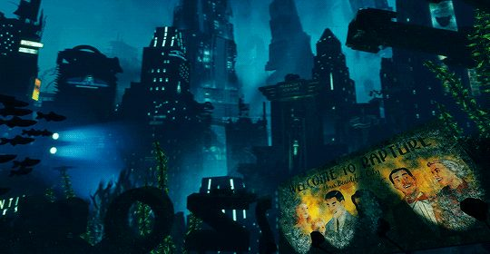
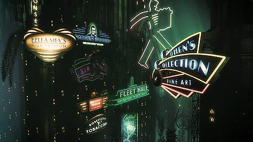
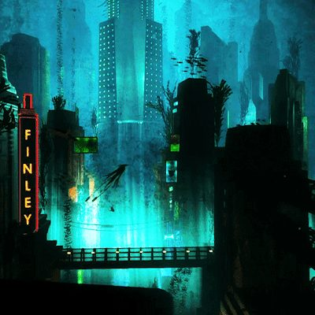
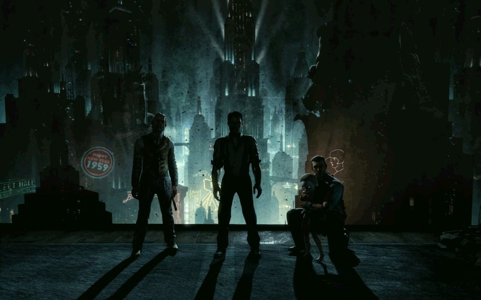

La ciudad
Una utopía construida bajo el mar que terminó en ruinas. Conocé su historia.

Lugares de interés
Distritos, parques y centros de entretenimiento que alguna vez fueron el orgullo de la ciudad.

Tecnología
Plásmidos, cámaras que reviven y guardianes blindados. Descubrí qué hizo posible Rapture.

Contacto
¿Tenés preguntas o ideas para el proyecto? Escribinos.
La ciudad
Rapture fue construida en el fondo del océano Atlántico a mediados de los años cuarenta por el magnate Andrew Ryan. La idea era crear una sociedad libre de gobiernos, religiones y límites para el arte, la ciencia y el comercio.
Con el tiempo, la falta de regulaciones y la lucha por el control del ADAM llevaron a la ciudad a una guerra civil. Rapture se convirtió en una utopía en ruinas, y esa caída es el escenario del primer BioShock.
Lugares de interés
- Centro de bienvenida
- La primera vista de la ciudad: un recibimiento lleno de optimismo que contrasta con lo que viene después.
- Neptune's Bounty
- El distrito pesquero y de abastecimiento, que alimentaba a buena parte de Rapture.
- Fort Frolic
- El distrito del entretenimiento y las artes, dominado por la obsesión de Sander Cohen.
- Arcadia
- Un parque con árboles y jardines bajo el mar, pensado como pulmón verde de la ciudad.
- Hephaestus
- La planta de energía geotérmica que mantenía en funcionamiento a toda Rapture.
Tecnología
- ADAM y plásmidos
- Una sustancia que permite modificar el cuerpo humano y dar poderes especiales, a costa de dañar la mente.
- Cámaras Vita
- Máquinas que reviven a los ciudadanos después de morir, guardando una copia de su estado genético.
- Batiesferas
- Cápsulas que conectan Rapture con la superficie y transportan entre las distintas zonas.
- Big Daddies y Little Sisters
- Guardianes con trajes de buzo blindados que protegen a las niñas que recolectan ADAM.
Contacto
no se que tienen en mente aca asi que despues le pregunto a luciel
Denos su opinion